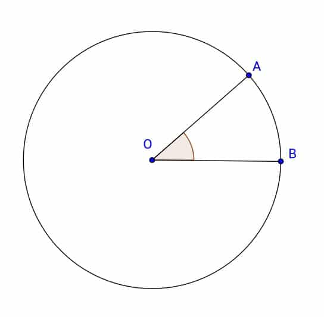
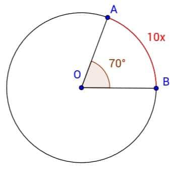
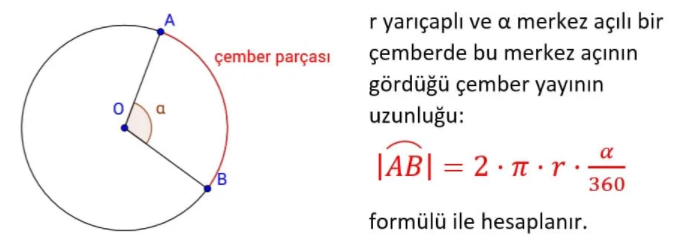
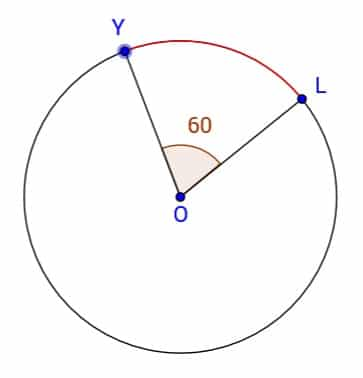
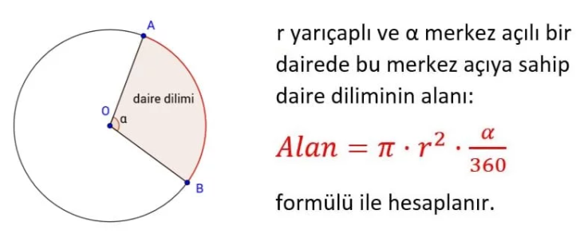
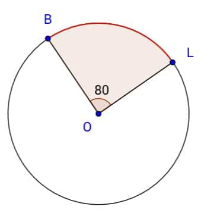

ÇEMBERDE MERKEZ AÇI VE ÇEMBER YAYI
Çemberde, köşesi çemberin merkezinde olan açılara merkez açılar denir.
Şekilde AOB açısının köşesi çemberin merkezinde olduğundan bu açı merkez açıdır ve bu açı AOBˆ şeklinde gösterilir.

Çember üzerindeki iki nokta arasında kalan parçaya yay adı verilir.
Şekilde çemberin üzerindeki A ve B noktaları arasında kalan yaya AB yayı denir ve AB⌢ şeklinde gösterilir.
Açıların olduğu gibi yayların da ölçüsü vardır ve dereceyle ölçülür. Çemberin tamamı 360°’dir. Yarım çember yayının ölçüsü 180° , çeyrek çember yayının ölçüsü ise 90°’dir.
ÇEMBERDE MERKEZ AÇININ GÖRDÜĞÜ YAYIN ÖLÇÜSÜ
Bir çemberde merkez açının ölçüsü ile gördüğü yayın ölçüsü birbirine eşittir.
Yukarıdaki çemberde AOB açısının ölçüsünü m(AOB)ˆ olarak gösteririz ve AB yayının ölçüsünü m(AB)⌢ olarak gösteririz. Buna göre bu eşitliği: m(AOB)ˆ=m(AB)⌢ şeklinde gösterebiliriz.
ÖRNEK:
Yandaki şekilde AOB merkez açısının ölçüsü 70° ve AB yayının ölçüsü 10x ise x kaç derecedir?

Merkez açı ve gördüğü yayın ölçüsü birbirine eşittir.
Bu yüzden 10x = 70° denkleminden x = 7° bulunur.
ÖRNEK:
Bir çemberde bir merkez açının ölçüsü 2x + 30°’dir ve bu merkez açının gördüğü yayın ölçüsü 5x − 60° ise x kaçtır?
Merkez açı ve gördüğü yayın ölçüsü birbirine eşittir.
Bu yüzden 5x − 60° = 2x + 30° denkleminden 3x = 90° olur ve x = 30° bulunur.
ÇEMBERİN VE ÇEMBER PARÇASININ UZUNLUĞU
Çemberin yarıçapı r ise çevresinin uzunluğunun 2.π.r formülünden hesaplandığını biliyoruz. Aynı zamanda çemberin tamamının 360° olduğunu da biliyoruz. Bu bilgileri kullanarak çemberin uzunluğunu ve çember parçasının uzunluğunu bulabiliriz.
ÖRNEK:
Yarıçapının uzunluğu 10 cm olan bir çemberin uzunluğunu bulalım. (π = 3 alınız.)
Çemberin çevre uzunluğu = 2.π.r = 2.3.10 = 60 cm’dir.
Şimdi ise çember parçalarının uzunluklarını bulalım. Bunun için çemberin tamamının uzunluğunu buluruz ve parçaya göre oranlarız.
ÖRNEK: Yarıçapının uzunluğu 12 cm olan çeyrek çemberin uzunluğunu bulalım. (π = 3 alınız.)
Çemberin çevre uzunluğu = 2.π.r = 2.3.12 = 72 cm’dir.
Soruda bize çeyrek çemberi sorduğu için 4’e böleriz ve 18 cm buluruz.
ÇEMBERDE YAY UZUNLUĞU FORMÜLÜ
Çember yayının uzunluğu = 2.π.r.α/360

Çember Yayının Uzunluğu
Çember Yayı Örnek
ÖRNEK:
Aşağıdaki şekilde verilen O merkezli çemberin yarıçapının uzunluğu 16 cm ve YOL açısının ölçüsü 60° olduğuna göre YL yayının uzunluğu kaç cm’dir? (π = 3 alınız.)

|YL|⌢=2.π.r.α/360=2.3.16.60/360=16 cm olarak bulunur.
DAİRENİN VE DAİRE DİLİMİNİN ALANI
Dairenin yarıçapı r ise alanı π.r2 formülü ile hesaplanır. Daire diliminin alanı ise merkez açısının 360° ile oranıyla dairenin alanının çarpımıyla bulunabilir.
ÖRNEK:
Yarıçapının uzunluğu 10 cm olan bir dairenin alanını bulalım. (π = 3 alınız.)
Dairenin alanı = π.r2 = 3.102 = 3.100 = 300 cm2‘dir.
Şimdi ise daire diliminin alanını bulalım. Bunun için dairenin tamamının alanını buluruz ve parçaya göre oranlarız.
ÖRNEK:
Yarıçapının uzunluğu 12 cm olan yarım dairenin alanını bulalım. (π = 3 alınız.)
Dairenin alanı = π.r2 = 3.122 = 3.144 = 432 cm2‘dir.
Soruda bize yarım dairenin alanını sorduğu için 2’ye böleriz ve 216 cm2 buluruz.
DAİRE DİLİMİNİN ALANI FORMÜLÜ

Daire diliminin alanı = π.r,r.α/360
Daire diliminin alan formülü
Daire Diliminin Alanı Örnek
ÖRNEK:
Aşağıdaki şekilde verilen O merkezli dairenin yarıçapının uzunluğu 9 cm ve BOL açısının ölçüsü 80° olduğuna göre verilen daire diliminin alanı kaç cm2‘dir? (π = 3 alınız.)
π.r.r.α/360=3.92.80/360=54 cm
2 olarak bulunur.
